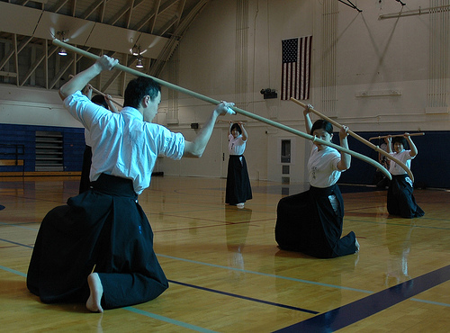
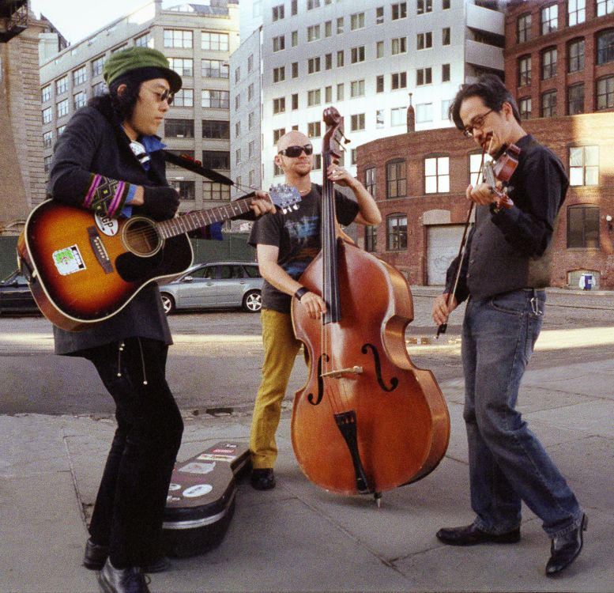
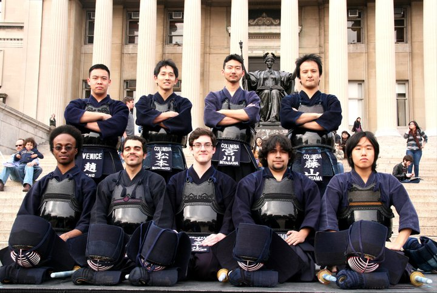
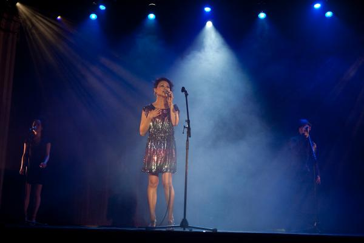
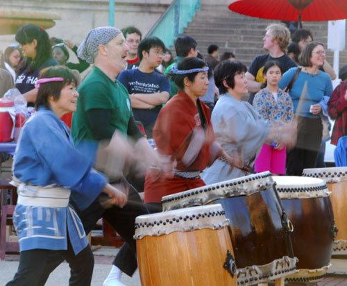
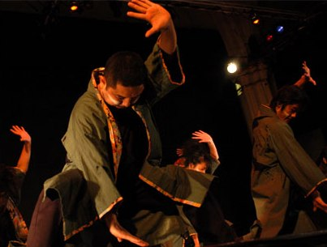
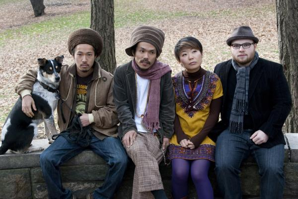

Stage
The Asterplace
The Asterplace strives to "create beautiful music like the blossoming of flowers every year." Every day, when the Sun brightens the world, The Asterplace engulfs the world with their music. They have played at many famous New York City venues, such as Webster Hall and Arlene's Grocery. They have also played at many anime conventions as guests of honors. Reconnecting with their own heritage, members of Asterplace fuse their cultures through their music, winning the hearts of people from all genders, races, ages, and borders.
Here is The Asterplace's upcoming tour schedule:
Mar 22 @ Local 269 NY
Mar 23 @Colombia University Japanese Festival Outside stage,NY
Apr 14 @DC Sakura Matsuri 2012 DC
Apr 14 @The Velvet Loung NY
Apr 21-22 @Tora-con Rochester NY
May 4 @ BAM con MA
May 11 @ Zenkaikon ,Oaks PA
Check out their homepage: http://www.asterplace.net/.
Columbia Naginata
The naginata is a Japanese battlefield weapon, one similar to a European halberd. It was originally used on horseback, as a way to cut the enemy horse's legs, but has evolved over time into a weapon used mainly by women. After WWII, a modern, competitive version of the martial art (atarashii naginata) was developed, believing that it would be more suitable for the newer generation. Naginata is now a practice that promotes personal character development, through the mental discipline learned from naginata training. Today there are currently over 10 countries, outside of Japan, with practitioners, and the numbers are continuing to grow.

Kagero
Kagero's sound is a melting pot of tonalities and rhythms from Asia, the Middle East, South America and Eastern Europe -- "Cultural Confusion". Sometimes the songs are beautiful imagery,
sometimes sad folk tales, and sometimes silly songs about drinking. But the tunes are always fun, and the show is high energy dancing good time.
"Kagero's world music goulash is very tasty -- even if you don't always know what you're eating.
"Rooted in uplifting elements from eclectic origins, "Japanese Gypsy Rock" unites Kagero's musical influences and talents into a cross-culture dance party."
--Meijin Bruttomesso, The Deli Magazine
Visit their official website at http://www.kagero.com/kagero.cfm.

Columbia University Kendo
Returning once again to Matsuri, the CU Kendo Club will showcase
some of their best moves and will amaze you with with their cool techniques with their shinai! Watch as they perform their formations and battle each other!

Rainybirds
Rainybirds is a band centered on a singer-song writer Ryoko Fujimoto. Its sounds are a unique blend of smooth melodies, R&B, Funk grooving with Fujimoto's mellow voice. Have a glass of champagne and let's dance together with Rainybirds!
Check out their myspace page at http://www.myspace.com/rainybirds

Columbia University Teacher's College Taiko Society
New York Taiko Aiko Kai is one of the Taiko groups in residence as part of the TC Taiko Society at Teachers College, Columbia University. It began in 2002 when a few families at an Upper West Side public school began practicing Taiko with a hope to pass Japanese culture to their children. The group has always been family oriented, but many adults including Columbia students and alumni, have also joined the group over the years. NYTAK has performed at various schools and institutions, including the Sakura Matsuri at the Brooklyn Botanical Garden, Japan in Central Park, and public and private schools in the metropolitan New York area.
Please take a moment to visit their website at http://nytak.blogspot.com/.

10Tecomai
The body goes beyond words. It is neither a full length novel nor a two hour theatrical play. All is dedicated in a song that does not even last a mere five minutes. There, lies an almost tragic, yet passionate expression of emotion. Japanese culture and hundreds of other cultures Our project's foundation is created when these meet. It is based on a traditional yet contemporary dance form called Yosakoi. While holding a prop called "Naruko" in both hands, The dancers intensely and dramatically dance as the chanter's cryinstigates the piece. Various expression is created when all of the above is combined.
"10tecomai", a Yosakoi Dance Project.
This dance won't stop.
This dance can't be stopped.
To find more about 10tecomai visit their webpage at http://www.10tecomai.com/.

Yuki and the Cuties
Yuki and Cuties is a band project started by singer/songwriter, Yuki Ishiwata. Playing mostly Yuki's very own compositions, Yuki and Cuties present a unique form of music -- a genre they simply like to call "happy". They performs a variety of music, ranging from Brazilian to Okinawan tunes. Simply put, they just want to sign with love.
You can listen to their music at http://soundcloud.com/yukishiwata.

Hogaku
The Institute for Medieval Japanese Studies, in collaboration with the Music Performance Program, the Center for Ethnomusicology, and the Department of Music launched the Gagaku-Hogaku Classical Japanese Music Curriculum and Performance Program in September 2006. The recent addition of the Columbia Hogaku Instrumental Ensemble furthers our goal of making it possible for young student musicians to experience the Japanese music tradition deeply and to master one or more of its instruments. Students currently can study either shakuhachi (an end-blown bamboo flute) or the koto, (a 13-string zither).
For more information, please email the Institute for Medieval Japanese Studies: medievaljapan@columbia.edu.